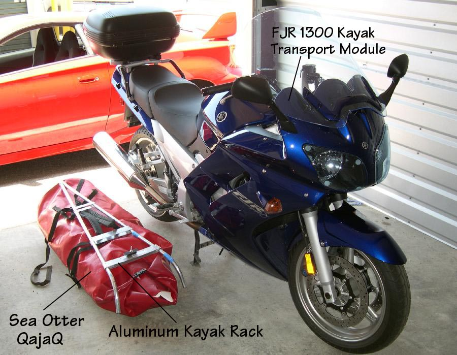

| Folding Kayak - Motorcycle Transport | Menu Last Page Next Page |
|

The 42in long kayak carrier is made of 3/4in 6063-T832 aluminum tubing and riveted flat aluminum plate. The PVC bag is actually a 42in REI dry bag. I added several inches of PVC to it's length to serve as a waterproof top cover and to allow for longer tubes. The bag holds the boat, a take-apart GP, sea sock, spray skirt, and PFD and is secured to the carrier with several straps. All other kayaking gear is stored in the trunk bag. Two hard side bags ( not shown) will carry all other gear when bike touring.
|
|